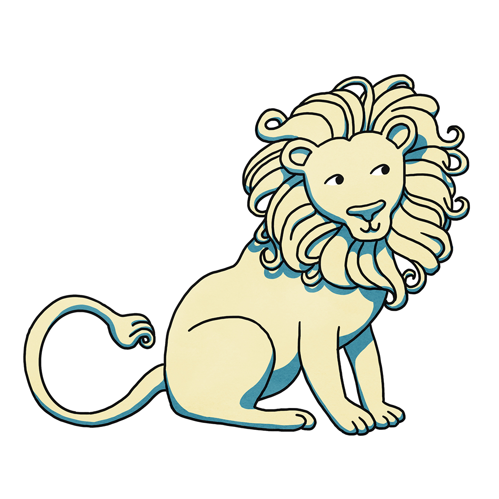

Animal illustrations for a series of posters. Each piece is created to appeal to both children and adults, playful enough to spark curiosity, yet elegant enough to complement modern interiors.
I used a palette inspired by the classic baby pink, yellow and blue, and combined these with more sophisticated tones to blend seamlessly into contemporary living spaces.
